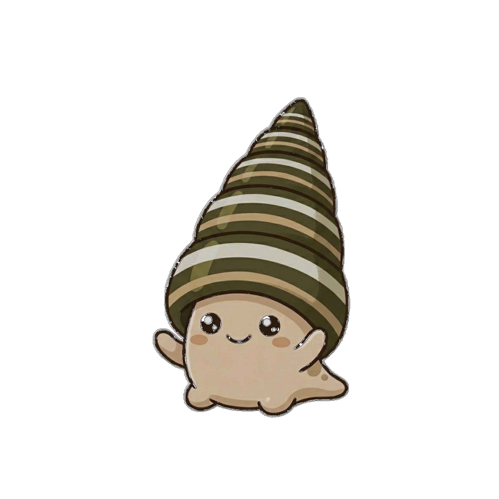
갯벌탐사대
갯고둥과 함께 떠나는
갯벌 탐험
갯벌 탐험
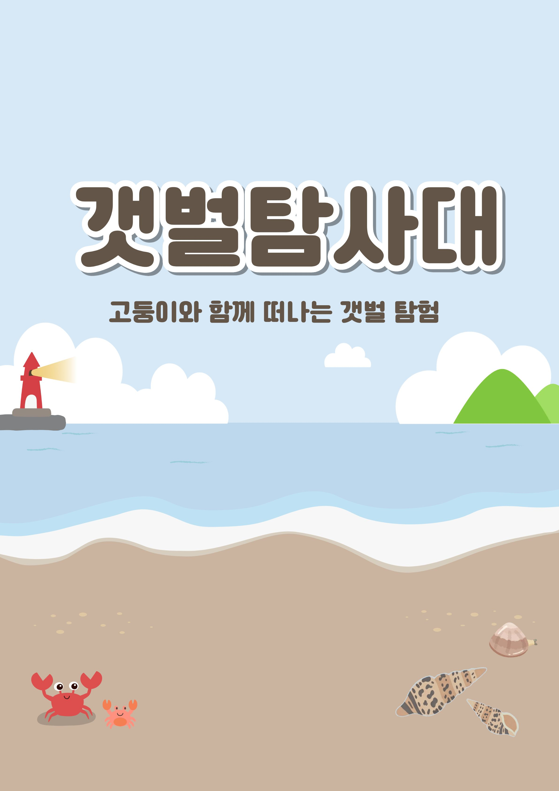
갯고둥과 함께 떠나는 갯벌 탐험

프로그램으로 갯고둥을 관찰한 뒤 느낀 점을 기록해요.
기록은 이 기기에 저장돼요!
아래 카드를 눌러 개념을 학습해봐요!
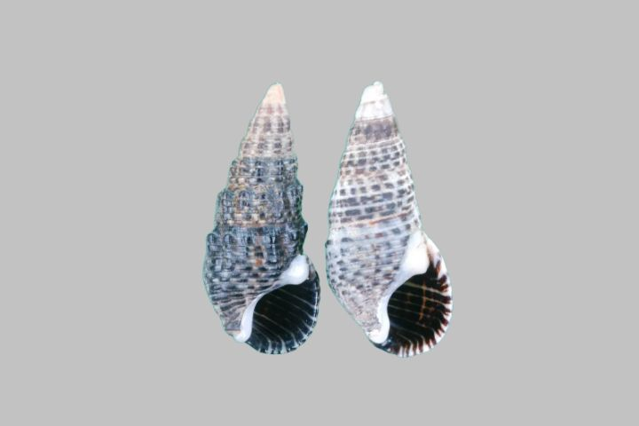
사진 준비 중'" alt="">껍데기 길이는 약 3cm예요. 탑처럼 8층으로 쌓인 나선형 껍데기를 가지고 있고 황갈색이에요. 입구는 개판(뚜껑)으로 막을 수 있어요!
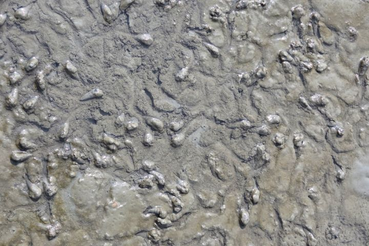
사진 준비 중'" alt="">갯벌 위에서 살아요. 우리나라, 일본, 중국의 갯벌에서 볼 수 있어요. 바다와 강이 만나는 조간대에 주로 살아요!
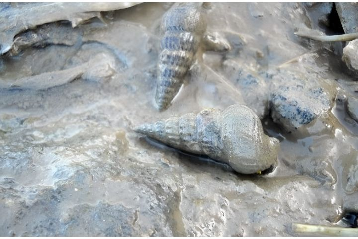
사진 준비 중'" alt="">갯벌 표면의 아주 작은 식물(미세조류)과 썩은 유기물을 먹어요. 갯벌을 깨끗하게 유지하는 중요한 역할을 해요!
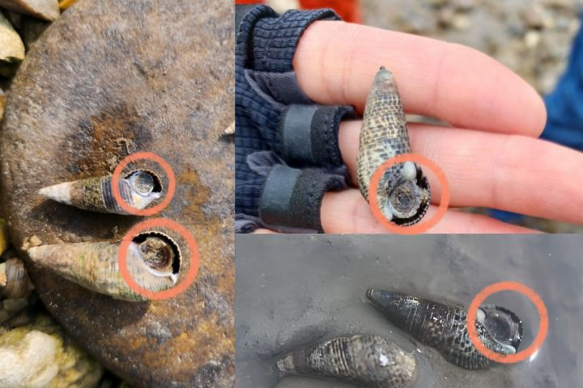
사진 준비 중'" alt="">힘든 상황이 되면 개판(뚜껑)으로 껍데기 입구를 꽉 막아요. 이렇게 하면 몸을 보호하고 물이 들어오는 것을 막을 수 있어요!
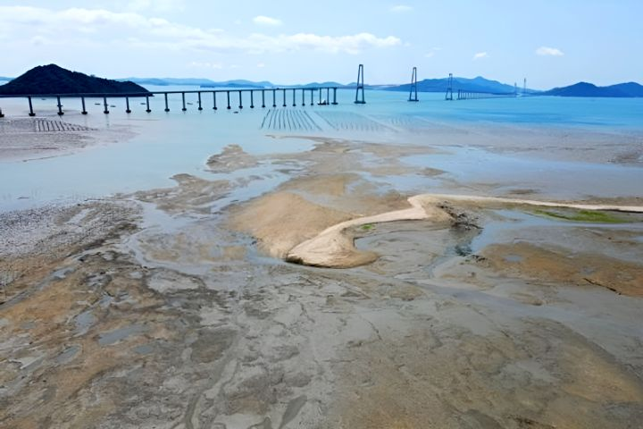
사진 준비 중'" alt="">바닷물의 짠 정도를 PSU라는 단위로 나타내요. 숫자가 클수록 더 짜요! 우리나라 바닷물은 보통 33 PSU예요.
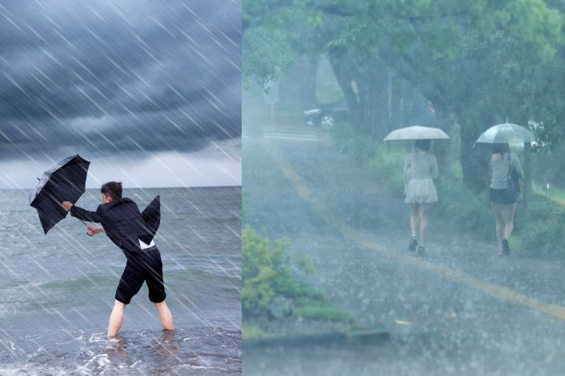
사진 준비 중'" alt="">비가 엄청 많이 오거나 댐에서 물을 방류했을 때 나타나요. 갯벌 생물들에게 매우 힘든 극한 환경이에요!
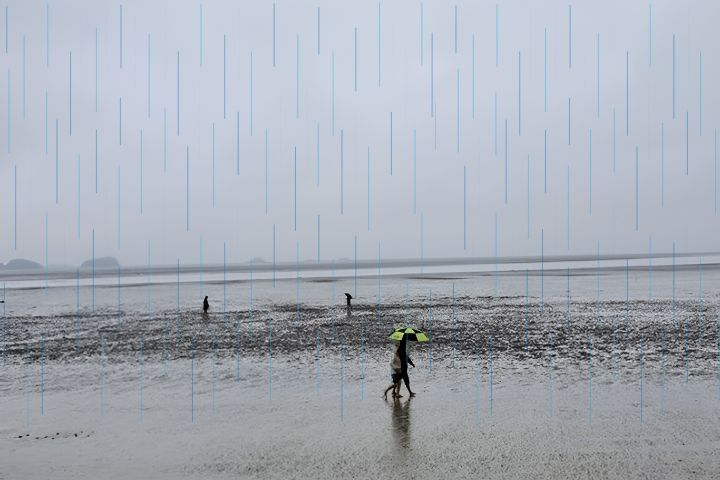
사진 준비 중'" alt="">집중호우 후 갯벌 표면 염도가 13 PSU 정도로 내려가기도 해요. 기후 변화로 이런 일이 점점 잦아지고 있어요!
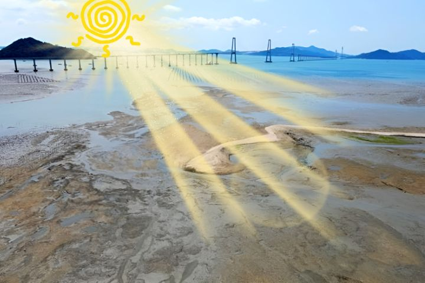
사진 준비 중'" alt="">여름철 뜨거운 햇빛으로 갯벌 웅덩이 물이 증발하면 일시적으로 43 PSU 이상이 되기도 해요!
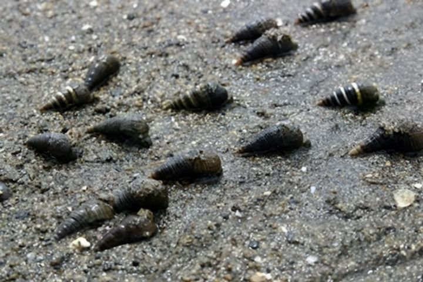
사진 준비 중'" alt="">정상 염도에서는 활발하게 움직이고 먹이를 찾아 이동해요. 총 활동 시간이 가장 길어요!
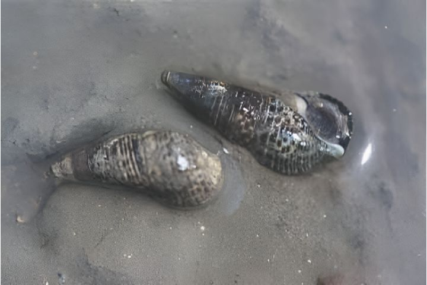
사진 준비 중'" alt="">극한 스트레스 상황! 개판을 닫고 거의 움직이지 않아요. 죽은 것처럼 보이지만 살아있어요!
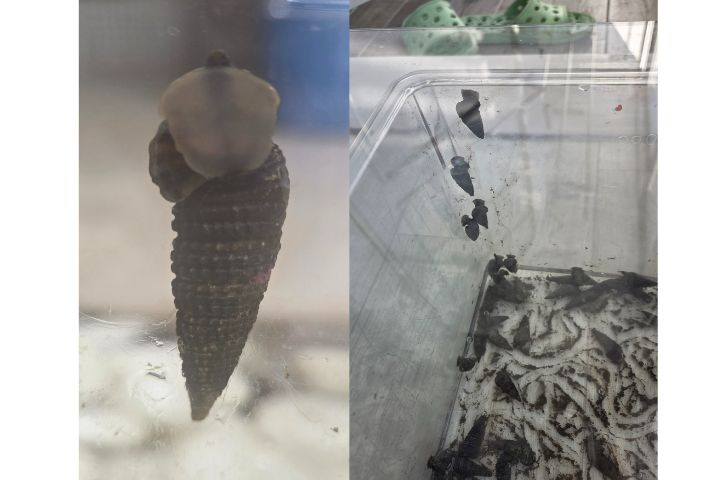
사진 준비 중'" alt="">처음엔 개판을 닫다가 시간이 지나면서 물 밖으로 이동하려 해요! 더 좋은 환경을 찾아가는 행동이에요.
상황을 읽고 갯고둥의 행동 유형을 골라봐요!
갯고둥의 행동으로 갯벌 상태를 추리해봐요!
갯고둥과 염분 스트레스에 대해
얼마나 이해했는지 퀴즈로 확인해봐요.
틀려도 괜찮아요! 틀리면 개념을 다시 확인할 수 있어요.